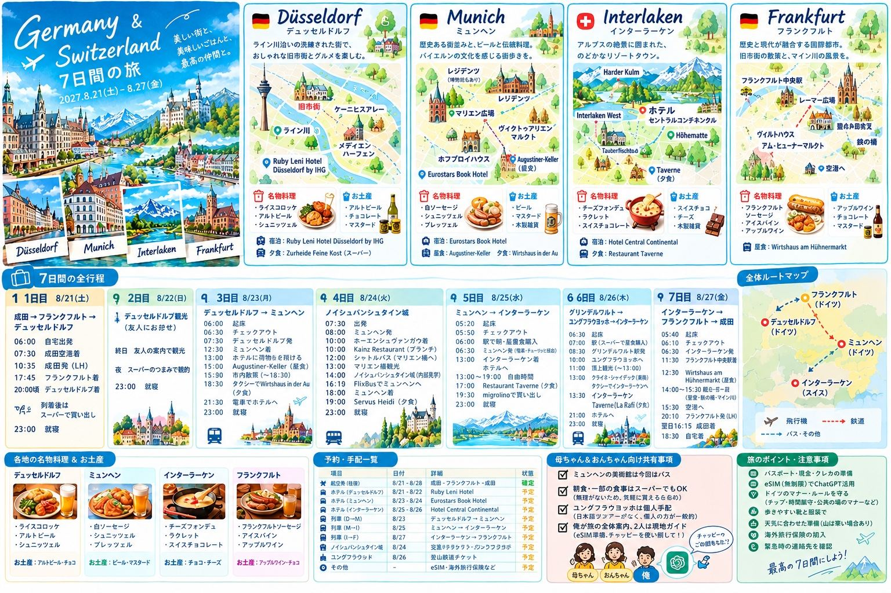
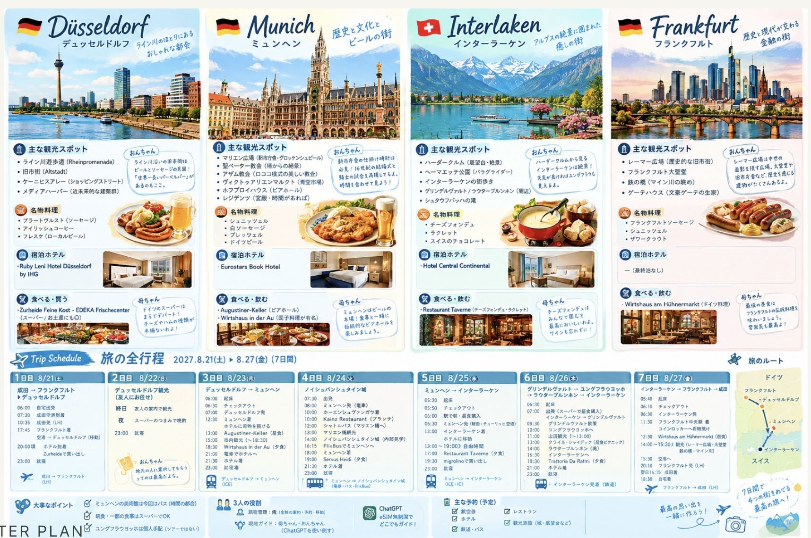
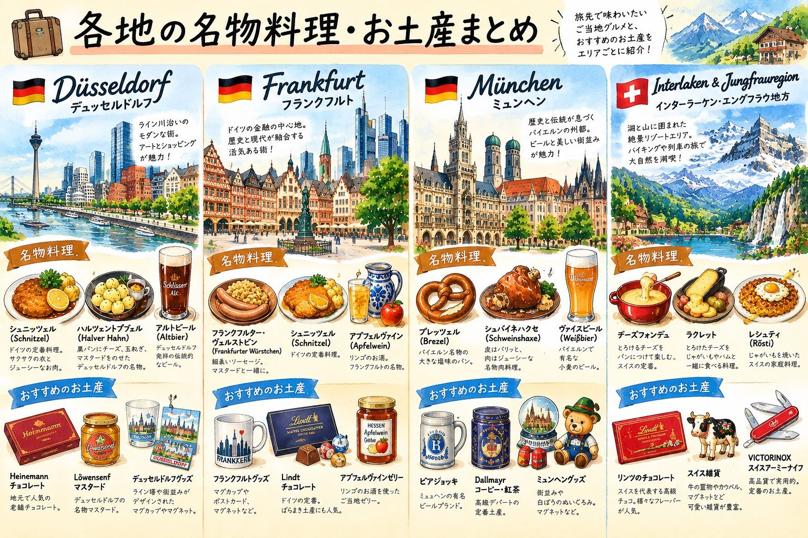
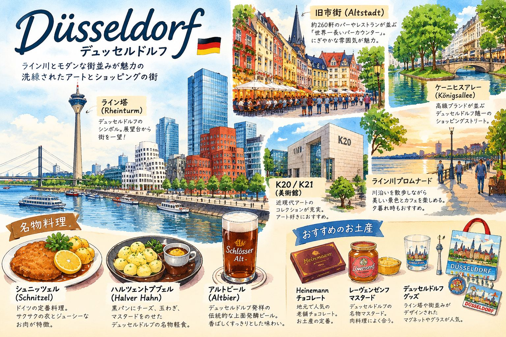
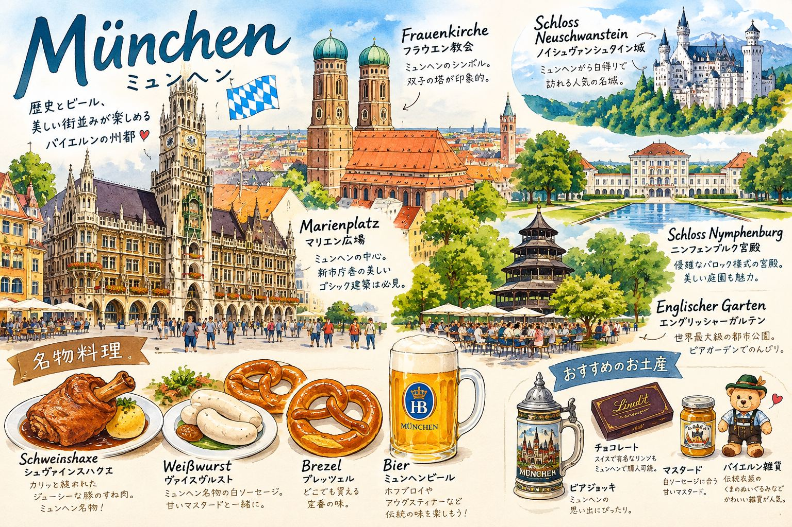
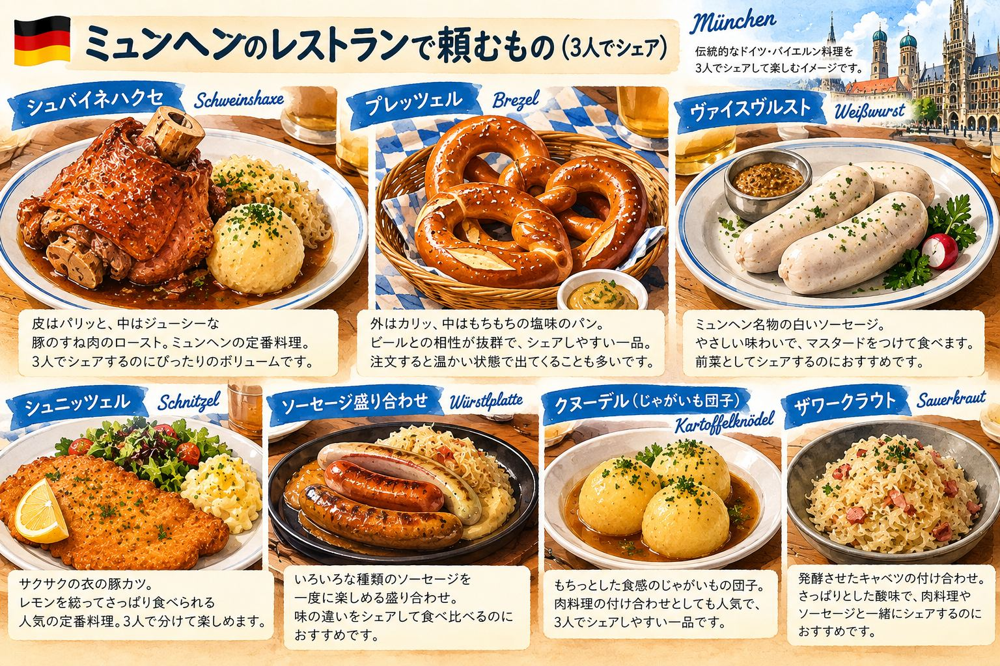
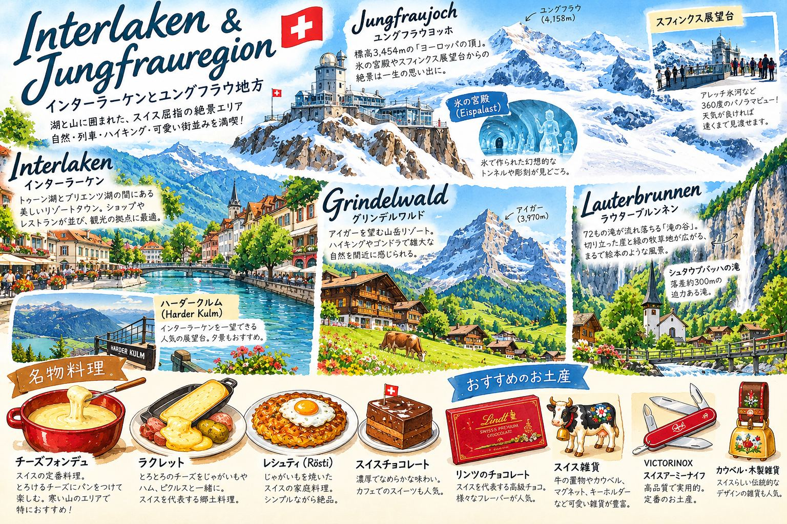
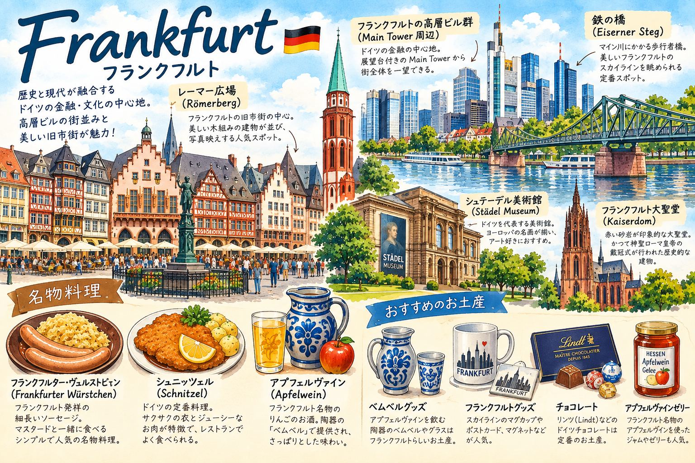
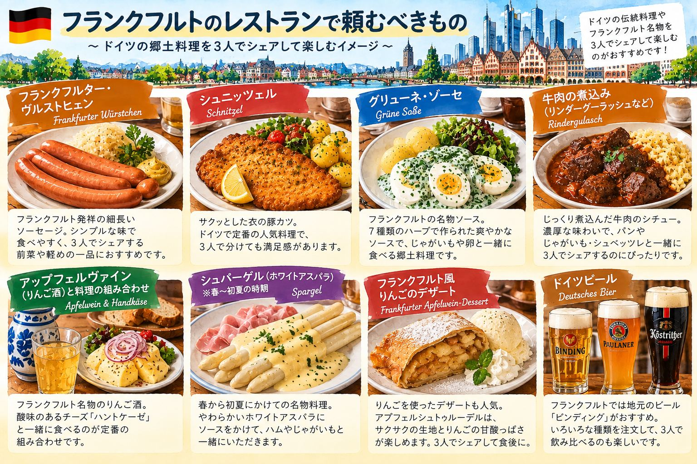

— 旅の全体像｜イラストで全ルートを確認
02 今回の旅は「観光＋食＋ウンチク」
03 7日間の全行程
04 各地の名物料理・お土産
05–06 予算・予約／手配
07–08 デュッセルドルフ｜DAY 1–2
09–10 ミュンヘン｜DAY 3・食
11 ノイシュヴァンシュタイン｜DAY 4
15–16 フランクフルト｜DAY 7・食
12–13 インターラーケン｜DAY 5・食
14 ユングフラウヨッホ｜DAY 6
17 7日間の「食べるもの」設計
18 交通ルート
19 日本人が戸惑いやすいドイツのマナー
20 同行者に伝えておきたいこと
21 30秒ウンチク集
22 予約が確定したら、ここを更新する 23 予約スケジュール 24 予算の根拠 25 交通費の詳細見積もり
7日間の旅程を、2枚のイラストでひと目に。


デュッセルドルフ、ミュンヘン、フランクフルトの名物を、店・スーパーの両方で食べる。
AltbierHaxenKnödelGrüne Soßeユングフラウヨッホはツアーではなく個人移動。昼食はスーパーで調達して山でピクニック。
JungfraujochGrindelwaldLauterbrunnen各地で「30秒ウンチク」を用意。現地ではeSIM無制限を武器にChatGPTを使い倒す。
へぇ〜を量産ただし重要情報は現地確認期間：2027/8/21(土)〜8/27(金) ※帰国8/28
人数：大人3人・ホテル3人1室
飛行機：成田→フランクフルト→成田（予算計算から除外）
都市：デュッセルドルフ → ミュンヘン → インターラーケン → フランクフルト
移動が多いので、朝食・一部夕食はスーパーを活用。レストランでは「その土地らしい料理」を優先し、重い料理が続かないように味・食材・調理法を分散。
06:00 自宅
07:30 成田
10:35 ✈ 成田発
17:45 フランクフルト着
→ デュッセルドルフ
20:00 ホテル
スーパー買出し
23:00 就寝
デュッセルドルフ
おんちゃんの友人に案内をお任せ
夜：前日購入のつまみで晩酌
23:00 就寝
06:00 起床
06:30 チェックアウト
07:00 Düsseldorf発
12:30 München
13:00 Augustiner-Keller
15:00〜18:30 市内散策
19:00 Wirtshaus in der Au
21:30 ホテル
07:00 起床
07:30 出発
08:00 München→城方面
10:00 Kainzでブランチ
13:00 Marienbrücke
14:00 城内部
16:15 FlixBus
19:00 Servus Heidi
05:20 起床
06:00 朝昼食購入
06:30 München発
13:00 Interlaken West
13:00〜自由時間
18:00 Taverne
20:30 スーパー
22:00 ホテル
06:30 起床
07:00 出発
08:30 Grindelwald
10:00 Jungfraujochへ
11:00〜13:00 山頂
13:30 Kleine Scheidegg
14:00 Lauterbrunnen
18:30 Da Rafmi
05:40 起床
06:10 チェックアウト
06:30 Interlaken発
11:30 Frankfurt Hbf
12:30 Hühnermarkt
14:00〜観光
15:30〜空港
20:10 ✈ フランクフルト発
食：Altbier／Rheinischer Sauerbraten系／Roggenbrot／ソーセージ・ハム／Senf。
お土産：Altbier、Löwensenfなどのマスタード、チョコ・菓子、ドイツ調味料。
食：Weißwurst／Brezn／Obatzda／Haxen／Knödel／Münchner Schnitzel／Helles。
お土産：ビール関連グッズ、マスタード、バイエルン菓子、木製・布製の小物。
食：Fondue／Raclette／Rösti／チーズ・チョコレート。
お土産：スイスチョコ、チーズ、木製雑貨、アルプス系食品・菓子。
食：Frankfurter Grüne Soße／Frankfurter Schnitzel／Frankfurter Würstchen／Handkäse／Apfelwein。
お土産：アップルワイン、グリューネ・ゾーセ関連商品、マスタード、チョコ・菓子。

中心値として約95〜100万円、1人あたり約32〜33万円を見ておく想定。
| 項目 | 3人合計の目安 | 考え方 |
|---|---|---|
| 🏨 ホテル6泊 | ¥230,000〜300,000 | 3人1室。Düsseldorf/München/Interlakenで価格差あり |
| 🚆 長距離・山岳交通 | ¥300,000〜370,000 | ICE、独→瑞、瑞→独、Jungfrau等 |
| 🍽️ 食費 | ¥150,000〜200,000 | レストラン＋スーパー。朝食・一部夕食を節約 |
| 🎫 観光・市内交通 | ¥90,000〜130,000 | 城、Harder Kulm、各種市内移動など |
| 📱 通信・雑費 | ¥30,000〜50,000 | eSIM、コインロッカー、チップ、予備費等 |
| 対象 | 予定 | 状態 | メモ |
|---|---|---|---|
| 🏨 Ruby Leni Düsseldorf | 8/21–23 | 予約予定 | 3人1室 |
| 🚆 Düsseldorf→München | 8/23 朝 | 予約予定 | ICE中心で検討 |
| 🍽️ Augustiner-Keller | 8/23 13:00 | 予約予定 | 3人 |
| 🍽️ Wirtshaus in der Au | 8/23 19:00 | 予約予定 | Knödel系をシェア |
| 🚍 München→Hohenschwangau | 8/24 08:00 | 予約予定 | FlixBus候補 |
| 🏰 Neuschwanstein | 8/24 14:00 | 予約予定 | 入場時間厳守 |
| 🚍 帰路FlixBus | 8/24 16:15 | 予約予定 | Münchenへ |
| 🍽️ Servus Heidi | 8/24 19:00 | 予約予定 | 3人 |
| 🏨 Hotel Central Continental | 8/25–27 | 予約予定 | 3人1室・冷蔵庫要確認 |
| 🚆 München→Interlaken | 8/25 06:30 | 予約予定 | Zürich Flughafen経由 |
| 🍽️ Taverne | 8/25 18:00 | 予約予定 | 元17:00→18:00へ変更 |
| 🚆 Interlaken→Grindelwald | 8/26 朝 | 予約予定 | 山岳交通 |
| 🏔️ Jungfraujoch | 8/26 10:00〜 | 予約予定 | 個人手配・公式時刻確認 |
| 🍝 Trattoria Da Rafmi | 8/26 18:30 | 予約予定 | 3人 |
| 🚆 Interlaken→Frankfurt | 8/27 06:30 | 予約予定 | Frankfurt Hbf 11:30頃 |
| 🍽️ Wirtshaus am Hühnermarkt | 8/27 12:30 | 予約予定 | フランクフルト名物 |
🚆 交通｜06:00 自宅 → 07:30 成田空港 → 10:35 成田発 → 17:45 Frankfurt Airport着 → 鉄道でDüsseldorfへ → Düsseldorf Hbf → 徒歩/市内交通 → Ruby Leni → 徒歩 → Zurheide
空港から鉄道でデュッセルドルフへ。20:00頃 Ruby Leni Hotel Düsseldorf by IHG 到着予定。
大きな移動日のため、到着後は観光せず「翌日以降をラクにする準備」に全振り。
夕食＋8/22朝食＋8/22夜のつまみ＋8/23朝食＋お土産候補をまとめて購入。
狙い：Altbier、Roggenbrot、チーズ、ハム・ソーセージ、惣菜、チョコ・菓子、ドイツ調味料。
Altbier：デュッセルドルフの代表的ビール。小ぶりのグラスで提供され、飲み終わると次が来る店も。
Zurheide：「スーパーそのものを食文化として楽しむ」初日の目玉。
8/21・8/22とも同じホテル。DAY 1は20:00頃到着、DAY 2は23:00頃就寝。

🚆 交通｜ホテル → Düsseldorf市内を徒歩・公共交通で友人と移動 → 観光終了後ホテルへ。具体的なルートは友人にお任せ。
旧市街（Altstadt）・ライン川沿い・ケーニヒスアレー・メディエンハーフェンなど、現地のおすすめを中心に回る。
3人で無理に観光地を詰め込まず、友人との時間を優先。
Altbierを現地で。食事は友人のおすすめを優先し、ミュンヘン以降の料理と被らないものを狙う。
前日にZurheideで買ったつまみを中心に、部屋でゆっくり。移動の少ない一日だからこそ、翌日に備えて回復。
2泊目。友人との観光後、前日に購入したつまみで部屋飲み。
🚆 交通｜06:30ホテル発・チェックアウト → Düsseldorf Hbf → 🚆 07:00頃発 → München Hbf 12:30頃着 → Eurostars Book Hotelへ荷物預け → 市内は徒歩中心 → 18:30タクシーでWirtshaus in der Au → 21:00電車でホテル方面 → 21:30ホテル

狙い：Augustinerのビール＋ミュンヘン料理。3人でシェアして肉料理一辺倒を避ける。
候補：Münchner Schnitzel／Obatzda＋Brezn／ソーセージ系。最終メニューは予約時に確認。
Marienplatz → St. Peter → Viktualienmarkt → Asamkirche → Hofbräuhaus → （時間があれば）Residenz → Manufactum / Dallmayr / OBACHT'
ここはKnödelを主役に。肉系のメイン＋団子料理＋さっぱりした副菜を3人でシェア。
8/23・8/24の2泊。到着後に荷物を預け、翌日はノイシュバンシュタインへ。

昼：Obatzda＋Brezn → Schnitzel → ソーセージを少量。
午後：Hofbräu Originalを1杯。
夜：Knödel＋ロースト系＋サラダ。
→ チーズ・揚げ物・肉・団子を分散して、同じ重さの料理が連続しないようにする。
8/23・8/24の2泊。8/23は21:30頃、8/24は21:30頃ホテル帰着予定。
🚆 交通｜07:30ホテル発 → 08:00 FlixBusでMünchen → Hohenschwangau周辺 → シャトルバスで高地へ → Marienbrücke → 徒歩でNeuschwanstein → 16:15 FlixBusでMünchenへ → 18:00着 → 19:00夕食 → 21:00電車でホテル → 21:30着
FlixBus候補。10時過ぎ到着想定。
ブランチ。城観光前なので、食べ過ぎず移動できる量を意識。
シャトルは予約不可想定。橋から城を撮影。
予約時間を最優先。橋から城までは徒歩移動を見込む。
ミュンヘン帰着後の夕食。 3人でシェアし、昼のブランチや城周辺の食事と被らない料理を優先。人気メニューは予約時の最新メニューで確認する。
16:15 FlixBus → 18:00 München着 → 19:00夕食 → 21:30ホテル。
Weißwurst＋Breznを3人でシェアして「バイエルンらしさ」を回収。食べ応えを求めるならSchweinebraten＋Kartoffelknödel。ブランチなので、城観光前は軽めを推奨。
公式メニューでは地域料理としてObazda、Weißwurst、Schweinebratenなどを掲載。営業時間は10:00〜17:00、温かい料理は10:30〜16:00。
Knödel Trio＋Bayrische Lachsforelleなど、昼の白ソーセージやロースト系と被らない組み合わせがおすすめ。3人なら前菜のSharing Brettlも候補。
現行メニューにはKnödel Trio、Backhendl、Münchner Schnitzel、Lachsforelleなど。夕食は「魚＋Knödel＋野菜」で変化を出す。
2泊目。Servus Heidiで夕食後、21:30頃ホテルへ。

🚆 交通｜05:50ホテルチェックアウト → München駅 → 06:30 🚆 Zürich Flughafen経由 → Interlaken West 13:00頃 → Hotel Central Continental → 自由時間（Harder Kulmなら鉄道利用候補） → Taverneへ徒歩/市内移動 → 19:30 migrolino Interlaken West → ホテル
街歩き／Harder Kulm／Höhematteでパラグライダーを見る／ホテルで休憩、から当日の天気・体力で選択。
チーズフォンデュ＋ラクレットを軸に、3人でシェア。チーズが重いので、付け合わせ・サラダ・飲み物でバランスを取る。
晩酌＋翌朝食＋Jungfraujoch昼食を購入。ホテル冷蔵庫の有無は予約前に確認。
8/25・8/26の2泊。Interlaken Westから移動しやすい立地を活用。
チーズフォンデュは白ワインを使うタイプが基本。Taverneの現行メニューではAlpine cheese fondueにVacherin・Alpine cheese・Gruyère・Racletteを使用。付け合わせのピクルス類を入れると、濃厚さをリセットしやすい。
8/25・8/26の2泊。Interlaken Westから徒歩圏を活用して荷物・買い出しを楽にする。
Interlaken West → Grindelwald → Jungfraujoch → Kleine Scheidegg → Lauterbrunnen → Interlaken
村を散策。パン＋コーヒー程度の軽食候補。
スフィンクス展望台／Ice Palace／Plateau。
持参した昼食を山を眺めながらピクニック。レストラン昼食より節約。
Staubbach Fallsを眺める。16:30〜17:00 Interlakenへ戻る。
🚆 交通｜07:00ホテル発 → Interlaken West → 🚆 Grindelwald → 山岳鉄道でJungfraujoch → 🚆 Kleine Scheidegg → 🚆 Lauterbrunnen → 🚆 Interlaken → Da Rafmi → スーパー → ホテル。昼食はKleine Scheideggで持参ピクニック。
日本語ツアーの選択肢が限られるため、今回は個人手配を採用。
昼食・滞在時間を自由に調整できる。
前日に購入して山へ持参。
アルプス一周の締め。 チーズ料理続きにならないよう、パスタ・リゾット・サラダなどから3人でシェアする方向で調整。
16:30〜17:00 Interlakenへ戻る → 18:30夕食 → スーパーで翌朝食 → 21:00ホテル。
Antipasto ×1＋ポルチーニのTagliatelle＋Risotto alla milaneseを3人でシェア、が候補。昼のスーパー飯・山の景色のあとに、温かいイタリア料理で締める。
現行メニューにはポルチーニのTagliatelle、サフランRisotto、海鮮Spaghettiなど。チーズ系を連続させないのが今回の狙い。
2泊目。Jungfraujochから戻った後、21:00頃ホテル到着予定。

🚆 交通｜06:10ホテルチェックアウト → 06:30 Interlaken発 → 🚆 11:30 Frankfurt Hbf着 → コインロッカー → 旧市街は徒歩 → 15:30頃 Frankfurt Hbf → 🚆 Frankfurt Airport → 20:10 Frankfurt発 → 8/28 16:15成田着 → 18:30自宅
コインロッカーへ荷物を預ける。
最後のドイツ料理。Frankfurter Grüne Soße／Frankfurter Schnitzel／Frankfurter Würstchen／Handkäseから、これまで食べていないものを優先。
Römerberg → Frankfurt Cathedral → Eiserner Steg → Main River。
20:10 Frankfurt発。余裕を持って空港へ。
ホテルには戻らず、20:10 Frankfurt発の便で日本へ。8/28 16:15成田着予定。

Frankfurter Schnitzel × 1〜2 ＋ Handkäs' mit Musik × 1 ＋ Wurstplatte × 1（食欲次第） ＋ Apfelwein。
→ こってりしたSchnitzelに、酸味のあるGrüne Soße・Handkäsを組み合わせることで、ドイツ料理続きでも重さを調整。
8/27はホテル泊なし。15:30〜16:00に空港へ移動し、20:10 Frankfurt発 → 翌8/28 16:15成田着。
Altbier／Roggenbrot／チーズ・ハム／ソーセージ／Rheinischer系惣菜をスーパーで。
Weißwurst・Brezn・Obatzda・Haxen・Knödel・Hellesを分散。
Fondue・Raclette・Röstiなどスイスらしいものを優先。
Grüne Soße・Frankfurter Schnitzel・Würstchen・Handkäseから未食を優先。アップルワインは飲める人だけ。
「肉→チーズ→魚/野菜→軽食」のように、味・食材・油分・食感を散らす。3人なので一人1皿ではなく、複数品をシェアして種類を増やす。
Augustiner-Keller：Obatzda＋Brezn＋Schnitzelを少量。Wirtshaus in der Au：Knödel＋ロースト＋サラダ。Servus Heidi：Knödel Trio＋魚料理＋野菜。Taverne：チーズフォンデュ＋酸味のある副菜。Da Rafmi：ポルチーニパスタ＋サフランRisotto＋Antipasto。Hühnermarkt：Frankfurter Schnitzel＋Handkäs＋Apfelwein。
「名物を食べる」ことと「同じ味を繰り返さない」ことを両立するため、肉・チーズ・揚げ物・野菜・魚・酸味を旅行全体で分散。
人前で何度もズズッとすするより、鼻をかむほうが自然。
大声で「すみませーん！」と呼ぶより、目線＋軽い合図を意識。
車が来なくても、歩行者信号が赤なら渡らない。特に子どもがいる場所では注意。
歩道と見た目が似ていても、自転車レーンは歩かない。
レストラン等ではチップ文化がある。会計時に合計金額を伝える方式も。
初対面・店員などには基本的に丁寧なSieを使う。親しくなるとDuへ。
降りる人を先に。荷物で通路を塞がない。車内では周囲への配慮を。
予約・集合時間は余裕を持つ。特に城・列車は遅れないことを最優先。
ゴミ箱・分別表示を確認。スーパーのデポジット容器も捨てずに確認。
今回は行かない。時間の都合上、街歩き・食事・市場・教会などを優先。
移動が多いので、朝食はパン・ヨーグルト・フルーツ等で済ませる日あり。1日目夕食もスーパー。Jungfraujoch昼食もスーパー購入でピクニック。
日本語ツアーに頼らず、自分たちで鉄道移動。自由度が高く、昼食も好きな場所で取れる。
全体の旅程・予約・移動を担当。基本の案内役。
ウンチクを調べる係。気になったら即チャッピー。
建物・歴史・料理・次の行き方をチャッピーに聞きまくる。
ミュンヘン旧市街の中心。新市庁舎のグロッケンシュピールでは歴史的場面が動く仕掛けを見ることができる。
アザム兄弟による18世紀の後期バロック／ロココ建築。小さな空間に装飾を詰め込んだ「盛り盛り」教会。
ミュンヘンを象徴するビアホール。ここでは食事よりも、樽生ビールと雰囲気を体験する時間に。
19世紀にルートヴィヒ2世が建設を進めた城。中世の城をそのまま残したものではなく、ロマン主義的な「理想の城」の性格が強い。
「Top of Europe」の呼び名で知られる高地。展望だけでなく、氷河・雪・鉄道そのものが見どころ。
マイン川を渡る歩行者用の鉄橋。旧市街と川・金融街の景色を一度に見渡せる。
| 時期 | 予約・確認するもの | 対応 |
|---|---|---|
| 今〜2026年秋 | 🏨 3ホテル | Ruby Leni／Eurostars Book Hotel／Central Continentalの料金・3人1室・キャンセル条件を確認 |
| 今〜2027年2月頃 | 🚆 長距離鉄道 | デュッセルドルフ → ミュンヘンを確認。早割が出たら予約 |
| 2026年12月〜2027年2月 | 🚆 国際鉄道 | ミュンヘン → インターラーケン、インターラーケン → フランクフルトを確認 |
| 2027年2月下旬頃〜 | 🚆 スイス国内鉄道 | インターラーケン → グリンデルヴァルトなどを確認。基本的に予約を急ぐ必要なし |
| 2027年春頃〜 | 🏔️ ユングフラウヨッホ | 8/26のチケット・座席予約の販売状況をチェック |
| 2027年春頃〜 | 🚌 FlixBus | ミュンヘン ↔ ノイシュヴァンシュタイン方面の販売状況をチェック |
| 2027年5〜6月頃〜 | 🍽️ レストラン | Augustiner-Keller／Wirtshaus in der Au／Servus Heidi／Taverne／Da Rafmi／Wirtshaus am Hühnermarkt |
| 2027年6月頃〜 | 🏰 ノイシュヴァンシュタイン城 | 最重要。 8/24・14時前後の内部見学枠を重点チェック |
| 2027年6〜7月 | 🔍 全予約確認 | ホテル・鉄道・バス・城・山岳交通・レストランを一通り確認 |
| 出発直前 | ✅ 最終確認 | 営業時間・運休・列車時刻・予約メール・天気などを確認 |
① ホテル → ② 長距離鉄道 → ③ ユングフラウヨッホ → ④ レストラン → ⑤ ノイシュヴァンシュタイン城
城：2027年6月頃〜／ユングフラウヨッホ：2027年春頃〜／FlixBus：2027年春頃〜／レストラン：2027年5〜6月頃〜
| 費目・内訳 | 計算 | 3人合計 |
|---|---|---|
| 🏨 ホテル｜デュッセルドルフ 2泊 | 約¥35,000 × 2泊 | ¥70,000 |
| 🏨 ホテル｜ミュンヘン 2泊 | 約¥45,000 × 2泊 | ¥90,000 |
| 🏨 ホテル｜インターラーケン 2泊 | 約¥55,000 × 2泊 | ¥110,000 |
| ホテル計｜6泊 | ¥270,000 | |
| 🚆 交通｜長距離・山岳・市内等 | 5区分＋市内交通等 | 約¥349,000 |
| 🍽️ 食費｜レストラン6回程度 | 3人 × 約¥6,000〜10,000/回 | 約¥150,000 |
| 🛒 食費｜スーパー・朝食・昼食・晩酌 | 3人・7日 | 約¥50,000 |
| 食費計 | 約¥200,000 | |
| 費目・内訳 | 計算 | 3人合計 |
|---|---|---|
| 🏰 ノイシュヴァンシュタイン城 | 3人分 | 約¥15,000 |
| 🏔️ ユングフラウヨッホ | 3人分 | 約¥15,000 |
| 🏔️ ハーダークルム等 | 3人分 | 約¥10,000 |
| 観光計 | 約¥40,000 | |
| 📱 通信｜eSIM無制限 | 3人分 | 約¥15,000 |
| 🛍️ お土産｜ドイツ・スイス | 3人分 | 約¥60,000 |
| 💰 その他｜ロッカー・タクシー・予備費等 | 約¥35,000 | |
| 合計｜航空券除く | 約¥969,000 | |
| 区間・項目 | 3人分の概算 | 備考 |
|---|---|---|
| ✈️ Frankfurt Airport → Düsseldorf | ¥25,000 | 到着後の鉄道移動 |
| 🚆 Düsseldorf → München | ¥45,000 | ICE・早割想定 |
| 🚌 München ↔ Hohenschwangau | ¥24,000 | 往復・3人 |
| 🚌 Hohenschwangau周辺 | ¥6,000 | シャトル等の予備 |
| 🚆 München → Zürich → Interlaken | ¥60,000 | 国際長距離移動 |
| 🚆 Interlaken周辺 | ¥20,000 | Interlaken Ost/West・Grindelwald等 |
| 🚞 Jungfraujoch往復 | ¥75,000 | 主要山岳交通 |
| 区間・項目 | 3人分の概算 | 備考 |
|---|---|---|
| 🚞 Harder Kulm等 | ¥10,000 | 行く場合の予算 |
| 🚆 Interlaken → Frankfurt | ¥60,000 | 長距離移動 |
| 🚇 ドイツ・スイス市内交通 | ¥15,000 | 地下鉄・トラム・バス等 |
| 🚆 Frankfurt市内・空港アクセス | ¥9,000 | 帰国時等 |
| 💰 交通予備費 | ¥20,000 | 乗車変更・追加移動等 |
| 交通費 合計 | 約¥369,000 | |
列車番号／発着時刻／乗換／座席／予約番号／駅までの徒歩ルート
チェックイン／アウト／3人1室／朝食／冷蔵庫／荷物預け
予約時刻／人気メニュー／3人での注文量／予算／チップ
城の入場時刻／シャトル／Jungfrauの乗車時刻／当日の営業時間
実際の支払額に更新し、3人合計と1人あたりを再計算。
eSIM／ChatGPT／オフライン用スクショ／緊急連絡先